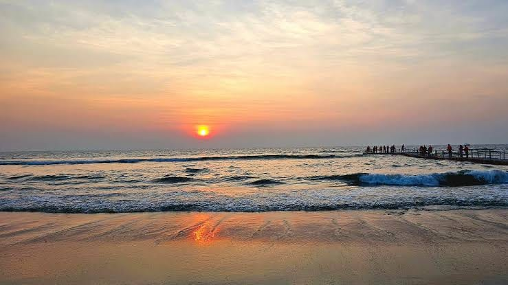

Mangalore, officially known as Mangaluru, is one of Karnataka's most interesting coastal destinations. Located beside the Arabian Sea, the city brings together sandy beaches, centuries-old religious sites, local markets, regional cuisine and access to the Western Ghats. Whether you are visiting with family, planning a temple trip or exploring coastal Karnataka, Mangalore offers several experiences worth including in your itinerary.
The best way to plan your visit is to group attractions by location, allow sufficient time for each stop and consider the weather. Beaches are especially attractive during suitable conditions, while temples and heritage locations offer a different perspective on the region's culture and history.
In This Travel Guide
Best Beaches in Mangalore
1. Panambur Beach
Panambur Beach is among the best-known beaches in Mangalore. Its broad shoreline and coastal atmosphere make it a popular place for an evening visit. Visitors often come to enjoy the sea views, take photographs from permitted areas and watch the changing colours of the sky around sunset.
Before visiting, check local beach conditions and available activities. Swimming and water sports should only be undertaken where officially permitted and under appropriate supervision. Avoid entering the water when warning flags or local safety instructions advise against it.

2. Tannirbhavi Beach
Tannirbhavi Beach is another coastal destination for travellers looking for a quieter change of pace. Its natural setting makes it suitable for relaxing, enjoying sea views and taking photographs. The experience depends on the season, access arrangements and weather.
Check the current route and beach access before leaving. Allow extra time if you plan to combine Tannirbhavi with other attractions on the same day, and always follow local safety instructions.
3. Someshwara Beach
Someshwara Beach, in the Ullal area south of Mangalore, is recognised for its rocky coastline and scenic surroundings. The rocks can be beautiful to photograph, but waves and slippery surfaces can make the shore dangerous. Keep a safe distance from the water and avoid climbing onto exposed rocks.
4. Sasihithlu Beach
Sasihithlu Beach is known for its coastal scenery and the surrounding estuary landscape. It is an option for visitors interested in exploring beyond the city's busiest attractions. Plan your visit with current access, weather and local conditions in mind.
Famous Temples to Visit in Mangalore
5. Kudroli Gokarnath Temple
Kudroli Gokarnath Temple is one of Mangalore's best-known religious landmarks. Visitors appreciate its colourful architecture, decorated surroundings and festive atmosphere during important celebrations. It can be included in a city sightseeing itinerary alongside nearby cultural attractions.
If you visit during a festival, expect larger crowds and allow more time for parking and access. Follow temple customs, observe photography rules and respect the arrangements made for worshippers.

6. Mangaladevi Temple
Mangaladevi Temple is a historic shrine associated with the city's name. It is an important destination for devotees and visitors who want to understand the area's religious heritage. Consider checking the temple's current timings and festival arrangements before planning your visit.
7. Kadri Manjunath Temple
Kadri Manjunath Temple is known for its history, spiritual importance and distinctive surroundings. A visit here can be paired with other temples and cultural sites in Mangalore. Dress appropriately and allow time to explore without rushing.
8. Sharavu Mahaganapathi Temple
Sharavu Mahaganapathi Temple is another prominent temple within the city. Its central location makes it a convenient stop for visitors planning a temple-focused sightseeing route. Confirm local customs and current visiting arrangements before travelling.
Historic and Cultural Attractions
9. Sultan Battery
Sultan Battery is a historic watchtower site near the Gurupura River. Its historical associations and riverside setting make it a worthwhile stop for visitors interested in the region's past. Combine it with other nearby attractions to make efficient use of your sightseeing time.
10. St. Aloysius Chapel
St. Aloysius Chapel is admired for its interior artwork and religious architecture. It offers a different experience from Mangalore's coastal attractions. Check access arrangements and photography rules before visiting, particularly if services or other events are taking place.
11. Pilikula Nisargadhama
Pilikula is a nature and cultural destination on the outskirts of Mangalore. Depending on current operating arrangements, visitors may find nature-oriented attractions and facilities for learning about local heritage. Check opening times, individual attraction access and ticket requirements before departure.
12. New Mangalore Port Viewpoints
The port area reflects Mangalore's importance as a coastal trading centre. However, port operations and security restrictions mean that visitors should use only publicly accessible viewing areas and never enter restricted premises. Check access rules before planning a stop.
13. Local Markets and Coastal Cuisine
A city visit is incomplete without experiencing local food and markets. Mangalore is known for its coastal culinary traditions, including seafood dishes and a variety of regional vegetarian specialities. Choose establishments that suit your dietary preferences and allow time for a relaxed meal during your trip.
14. Ullal and the Southern Coast
The Ullal area provides opportunities to explore coastal scenery and local surroundings beyond central Mangalore. Some shoreline locations have strong currents and exposed rocks, so enjoy the scenery from safe, permitted places rather than assuming every stretch is suitable for swimming.
15. Local Heritage and Neighbourhood Exploration
Mangalore's character can also be discovered through its neighbourhoods, traditional architecture, local shopping areas and everyday food culture. Leave some flexibility in your schedule for a market visit or an additional attraction recommended by a local resident.
Suggested One-Day Mangalore Sightseeing Itinerary
If you have just one day, prioritise a manageable group of attractions. The following is a sample itinerary, not a guarantee of travel times or attraction availability.
Trying to visit every attraction in one day can make the trip tiring. Choose the places that matter most to your group and leave enough time for meals, walking, rest and changing traffic conditions.
Practical Tips for Visiting Mangalore
Choose the right season
Weather affects beach visits, outdoor sightseeing and road journeys. The monsoon can bring heavy rain and rough seas, while hot weather calls for hydration and sun protection. Check a reliable forecast before your visit and adapt outdoor plans when necessary.
Plan routes sensibly
Group nearby attractions together to reduce unnecessary driving. Check opening times before setting out and account for parking, traffic and festival crowds. Keep some flexibility for delays.
Prepare for temple visits
Temple rules can differ from one site to another. Check current darshan timings, dress expectations, footwear arrangements and photography restrictions. Special ceremonies may require additional planning.
Travel comfortably with your group
When travelling with children, older family members or luggage, consider seating space and the length of the day's itinerary. Carry water, essential medicines and any personal items your group needs. For coastal stops, follow warning signs and local safety advice.
Explore Mangalore with Radhakrishna Taxi Service
Arranging local transport can help simplify a sightseeing day, especially when you want to visit multiple attractions. Radhakrishna Taxi Service is based in Mangalore and accepts enquiries for local travel, airport transfers and journeys to destinations across Karnataka.
When requesting a taxi quotation, provide your pickup location, travel date, passenger count, preferred vehicle and list of places you would like to visit. This helps the service assess your requirements and confirm availability and pricing.
Before confirming, clarify the total fare, waiting time, parking or toll charges where applicable, and the planned duration of the trip. A clear itinerary helps everyone understand the arrangements.
Whether you are visiting Mangalore for a family holiday, temple darshan or a short coastal break, plan around your priorities and leave time to enjoy the city at a comfortable pace.
Frequently Asked Questions
1. What are the best places to visit in Mangalore?
Popular options include Panambur Beach, Tannirbhavi Beach, Someshwara Beach, Kudroli Gokarnath Temple, Mangaladevi Temple, Kadri Manjunath Temple, Sultan Battery and St. Aloysius Chapel. The best selection depends on your interests and available time.
2. Can I explore Mangalore in one day?
Yes. You can visit a selection of beaches, temples and heritage sites in one day if you plan the route carefully. It is better to prioritise a few attractions than rush through the entire list.
3. Is Mangalore suitable for a family holiday?
Mangalore offers a mix of cultural attractions, temples, local food and coastal scenery that can suit family holidays. Choose age-appropriate activities and follow beach safety instructions.
4. What should I check before visiting Mangalore beaches?
Check the weather, local access arrangements and beach safety notices. Swimming and water activities should only take place where permitted and conditions are considered safe by local authorities.
5. How can I enquire about a Mangalore sightseeing taxi?
Contact Radhakrishna Taxi Service on +91 81477 71217 or through WhatsApp. Share your travel date, pickup point, passenger count and planned destinations to request availability and a fare quotation.
6. Can I combine Mangalore sightseeing with nearby destinations?
Yes. Udupi, Dharmasthala and other destinations may be included in a longer itinerary. Check distances and temple or attraction timings before combining them with local sightseeing.
Travel information is provided as a planning guide. Attraction access, opening hours, weather, local rules and transport arrangements can change. Confirm important details before travelling.